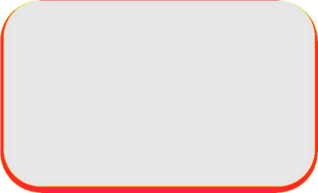
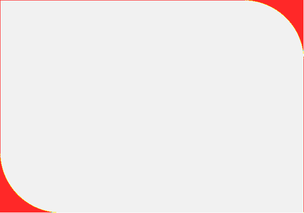
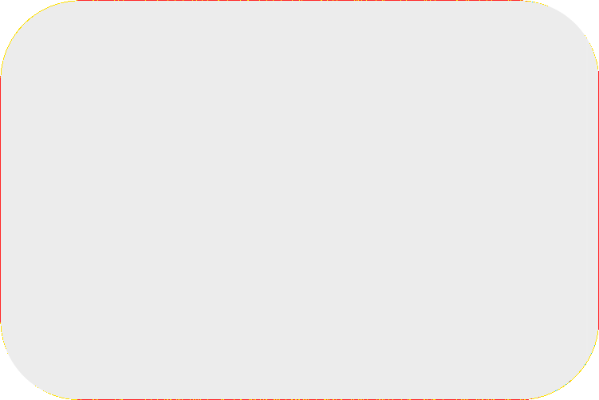
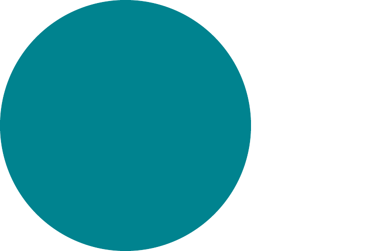
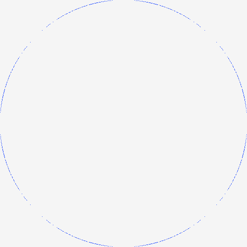

PARTIAL 4.83% border-radius-uniform · uniform · REAL
Chrome refironpress
SSIM diff Filled box with a uniform 24px border-radius and a solid border.
PARTIAL 2.79% border-radius-per-corner · per-corner · REAL
Chrome refironpress
SSIM diff Filled box with two rounded corners and two square corners.
PASS 0.42% border-radius-x-linear-gradient · x-linear-gradient
Chrome refironpress
SSIM diff Combo: border-radius rounding must clip a linear-gradient background fill (same-category combination).
PASS 0.03% border-radius-circle · 50pct-circle
Chrome ref
ironpress
SSIM diff Square box turned into a filled circle via border-radius 50%.